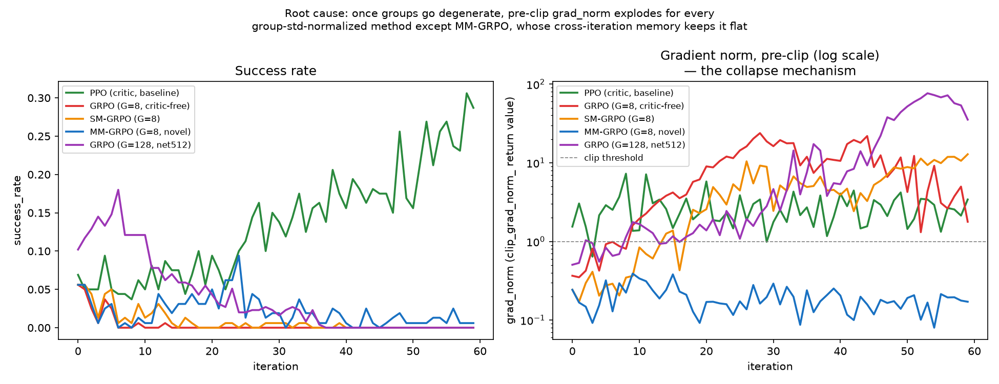
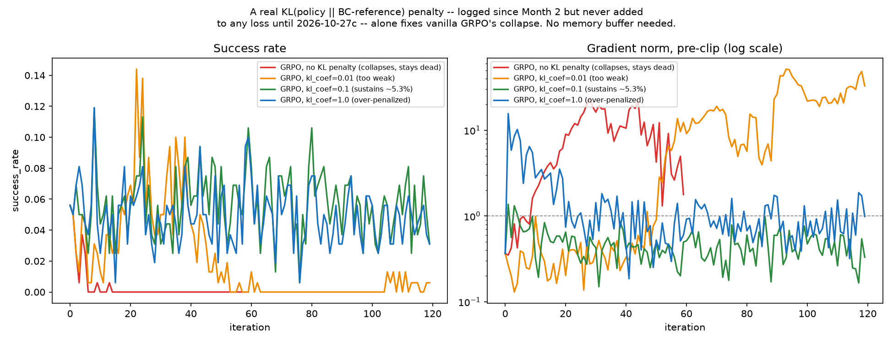
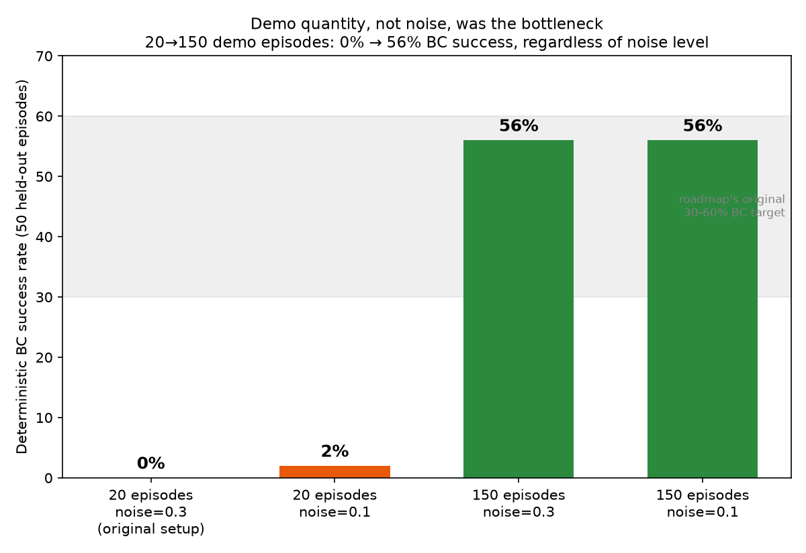
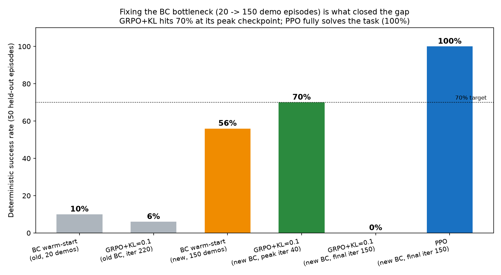

Critic-free RL methods like GRPO promise a cheaper way to fine-tune robot policies — no value network to train or store. In practice, every critic-free method I tested collapsed to permanent 0% success within a few dozen iterations. I traced the collapse to a specific mechanism — a gradient-norm blowup under group-std normalization — fixed it by correctly wiring a KL-to-reference penalty that the standard GRPO recipe specifies but is usually never actually implemented, and, after finding the real bottleneck was somewhere else entirely, reached 70% deterministic success with no critic at all.
GRPO (Group Relative Policy Optimization) replaces a learned value function with a simple trick: roll out several trajectories from the same starting state, and use each one's return relative to its group's mean and std as the advantage. No critic network, no bootstrapped value estimate — exactly the memory saving that matters when you'd otherwise double the parameter count with a critic the same size as the policy.
I fine-tuned a behavior-cloning-warm-started policy on Meta-World's pick-place-v3 task (a Sawyer arm picking up a puck and placing it at a target) with GRPO, RLOO, TGRPO, and a state-matched variant I designed. Every one of them collapsed to a permanent 0% success rate within 10–40 iterations and never recovered, while a PPO baseline with a real critic climbed steadily. The question became: is this failure fundamental to critic-free RL, or fixable?
The obvious hypothesis is that once a group of rollouts all succeed or all fail (a "degenerate group"), the std-normalized advantage goes to zero and training just stalls. The actual mechanism is worse. A degenerate group's return std is near zero but not exactly zero — dense reward still varies slightly between rollouts that share the same outcome. Dividing by that near-zero denominator (even through a floor meant to prevent exactly this) produces a handful of extreme advantage outliers.
Gradient clipping bounds the resulting update's size, but not its direction — so the policy keeps moving along whatever direction those few outlier samples point, gets worse, produces more degenerate groups next iteration, and the cycle never reverses. I confirmed this by tracking the pre-clip gradient norm directly: it doesn't shrink toward zero as training fails, it climbs — up to 76× the clip threshold — exactly when success flatlines, and keeps climbing for the rest of the run even with success stuck at 0%.

Once collapsed, every critic-free method tested never recovers: zero instances of nonzero success appearing after a run goes fully degenerate. PPO's critic-relative advantage never depends on in-batch outcome variance, so it's immune to this mechanism entirely.
The standard GRPO recipe calls for a KL-divergence penalty against a frozen reference policy to prevent exactly this kind of unconstrained drift. Checking the implementation, the KL divergence was being computed and logged the entire time — it just was never added to the loss. Pure telemetry, not a safeguard.
Wiring in a real, differentiable KL penalty term and sweeping its coefficient on vanilla GRPO — no architectural changes, no memory buffer, nothing but the fix itself — was the single highest-leverage change in the whole project:

I also ran this fix head-to-head against the alternative remedies proposed elsewhere in the literature — dropping group-std normalization for a global batch normalization, and a robust std-floor on the group denominator — tested alone and combined with the KL penalty. Neither normalization scheme survives on its own (both collapse by iteration 12–16, same as unconstrained GRPO); every combination that includes the KL penalty survives. The KL penalty is the necessary ingredient, not the normalization scheme.
With the collapse fixed, success still plateaued around 5–6% — far short of a usable policy. Before tuning the RL algorithm further, I checked the thing every algorithm in this project was fine-tuning from: the behavior-cloning warm-start itself, evaluated deterministically rather than through the noisy training-time success rate. It reached only 10% success. No RL algorithm was ever going to climb far above a reference that bad.
A controlled ablation isolating demo quantity from demo noise found the entire story was quantity: the default 20 demonstration episodes were simply never enough data for the policy network to generalize. Going to 150 episodes — with the noise level unchanged — took BC success from 0% to 56%, regardless of how clean or noisy the demonstrations were.

No amount of RL-side tuning — collapse-fix or otherwise — was ever going to close a gap that lived one layer down, in the imitation data the whole pipeline was built on.
Re-running GRPO with the KL-penalty fix from the corrected, 56%-success behavior-cloning checkpoint, evaluated deterministically at its best checkpoint along training:

| Checkpoint | Deterministic success |
|---|---|
| BC warm-start (original, 20 demos) | 10% |
| BC warm-start (fixed, 150 demos) | 56% |
| GRPO + KL=0.1, near training-time peak (iteration 40) | 70% |
| GRPO + KL=0.1, final checkpoint (iteration 150) | 0% |
| PPO, final checkpoint (iteration 150) | 100% |
50 held-out evaluation episodes per checkpoint, deterministic policy (no sampling noise).
The same run that produced the 70% checkpoint at iteration 40 fully re-collapsed to 0% by iteration 150, with the identical gradient-norm-climbing signature as the original, unconstrained failure. The KL penalty raises the ceiling substantially and removes the irreversible noise-amplification mechanism I diagnosed in section 02 — it does not make the method converge the way PPO's critic-relative advantage does.
Head-to-head against two alternative normalization fixes from the literature; only KL-penalized runs survive.
train.py has no automatic best-checkpoint tracking against a held-out deterministic eval — a real engineering gap if GRPO is to be deployed without PPO's inherent stability.
kl_coef=0.1 was implicitly calibrated against a nearly-useless 10%-success reference. Testing 0.2–0.5 against the real 56%-success reference now.
Group-relative, critic-free RL fails on continuous robot control through a specific, traceable mechanism: a near-zero group-std denominator inflates noise into gradient-dominating outliers, and the resulting drift compounds every iteration it goes unchecked. A correctly-implemented KL-to-reference penalty — specified by the standard recipe, but rarely actually wired into the loss — stops that mechanism outright, and once it stops being the limiting factor, the behavior-cloning data quality becomes the real bottleneck. Fixing both took this pipeline from a 10% starting point to 70% with no critic at all. Closing the remaining gap to PPO's 100% — without PPO's critic — is the open question this project is chasing next.